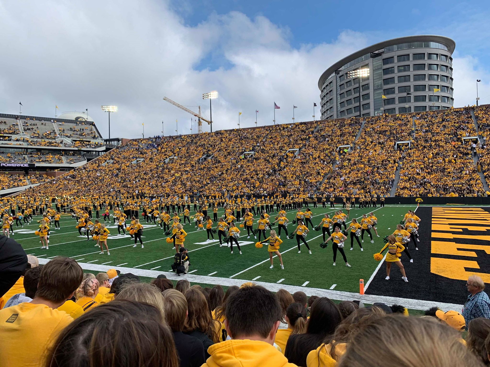

My name is Kimberly Souravong and I consider myself a non-traditional technical student... I didn't grow up wondering how a computer worked, had someone to teach me the in and outs of a PC, or was interested in programming. However, after taking the Information Systems course at Iowa, I was very interested in working with databases and everything that came along with it! Feel free to explore my page to get know me more.
If you would like to check out my life and work experience, here is my LinkedIn!
Located in the southeastern part of Iowa with a city population of around 24,000, I was born and raised in Ottumwa. As a kid, I went to school, played outside with friends, played computer games, and did what every other normal kid would do. I grew up with a family of four with my parents and a younger brother. My parents, Tim and Anna, were born in Laos and moved over to the United States in the late '90s. My brother, Austin, who is seven years younger than me, loves to game on his PC, eat spicy food, and learn new things. Throughout my early education, I did academically well and was recognized for my hard work by being an honor roll student for many years. But without the inspiration of my friend in the 6th grade, I would not have been motivated to push myself harder to be the best I can be. After graduating from Ottumwa High School, I continued to strive for the best both in my workplace and post-secondary education.
When in high school, I was enrolled in dual credit classes that were through my local college, Indian Hills Community College. I was grateful my school was able to offer this because it helped reduce future tuition cost and gave me a head start to earning college credits. As a result when I attended Indian Hills, I was told by the academic advisor I just had to be there for a year and can graduate with just enough credits. At one point, I was interested in the Pharmacy Technology program and tried it out for one term. Eventually, I found out it wasn't something I was passionate about and stuck to my original plan of a business major. I continued on with my studies making my way onto the President's and Dean's List. Finally, I graduated in May of 2018 with my Associates of Arts degree, and made my parents proud as I was a First Generation student.
I transferred to The University of Iowa in the Fall of 2018. I struggled with the transition my first semester because I was used to a light workload at Hills, while at Iowa it was heavier. Because of this struggle I was having, it forced me to change my studying habits where I was able to get back on my feet and keep up with my courses. When I arrived on campus, I considered declaring Marketing as my major. I chose Marketing because of my years of experience in retail and I loved my time working at Kohl's. I took Information Systems, which was just a business core class, in my second semester and I enjoyed it! It was something completely new and I liked working with Microsoft Access and creating queries. At this point, I was confused on what I wanted to do for my future career. I was thinking I've taken only this one course and liked it a lot, but I've worked years in retail. I spoke with my academic advisor and told her what was going on, she told me that students typically don't enjoy the course after taking it, but is a good sign for me if I did. We came up with a plan that I should double major in Marketing and Information Systems. By doing this, I can see at the end of the semester which one I would favor more. During my Fall 2019 semester, I favored the IS courses more than my Marketing ones, and came to conclusion that I should fully commit to being an Information Systems major.

There is a lot of things I do in my free time. I played tennis in high school and continue to play in my spare time. Preferrably when the weather is nice, but if there is an indoor tennis court nearby, then I'll play with a friend. When I met my boyfriend, Mike, he introduced me to his hobbies which I now also enjoy! He is a huge movie buff, so I was always dragged to the movie theater. However, I've grown to love movie theater popcorn and watching films on the big screen. He was also into disc golfing, which is a sport I've never played before, and now find very fun. You would think it's easy to throw a disc, but it does take time to throw it correctly and skillfully. Lastly, we both enjoy gaming. I didn't have access to any game consoles or paid for PC games, and my mom also didn't like me gaming. But after meeting Mike, I found out he liked PC gaming and him and his friends would have Friday night gaming. I was able to PC game with them and play on nice computers!